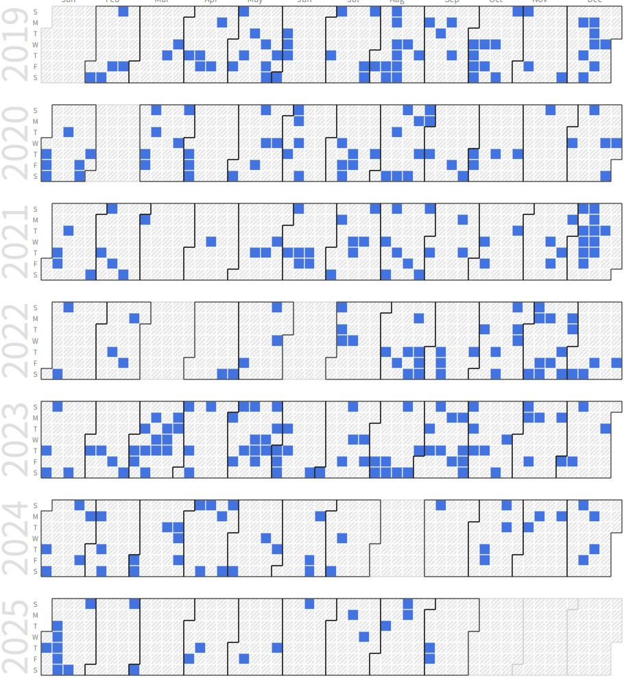

Myeongjin Kang (Integrated Ph.D. Student)
 |
Ph.D Candidate. |
Repository Commit History
|  |
Introduction
Full Bio Sketch
Mr. Kang received his B.S. degree in Electronics Engineering at Kyungpook National University, Daegu, Republic of Korea in 2020. He is currently a integrated Ph.D. student in School of Electronics Engineering at Kyungpook National University, Daegu, Republic of Korea. His research interests include the robust execution techniques of microcontroller. The techniques for robust execution includes processing of ECC and analysis of power consumption data in embedded systems. His research direction pursues performance improvement, low power consumption, and size reduction based on robust execution for the development of microcontrollers. Currently, he is conducting research on analyzing processor bus communication with mcahine learning for error detection and error prediction for robust execution.
Research Topic
 A tiny processing unit (TPU) activated with insufficient power always has a problem with data protection. To solve this problem, many TPUs and embedded systems use error-correcting code (ECC), especially Hamming code. However, adding an ECC decoding block to the TPU can cause a bottleneck. Most TPUs that follow a Von Neumann structure spend large amounts of time in the instruction fetch stage. The instruction fetch time increases due to ECC decoding intensifying the bottleneck. In this research, we propose an architecture for a parallelized ECC decoding block. Although it increases memory usage, the parallelized ECC decoding block speeds up the entire TPU by more quickly processing the ECC decoding. This architecture was synthesized and validated with Design Compiler and showed successful performance improvements using proposed architecture.
A tiny processing unit (TPU) activated with insufficient power always has a problem with data protection. To solve this problem, many TPUs and embedded systems use error-correcting code (ECC), especially Hamming code. However, adding an ECC decoding block to the TPU can cause a bottleneck. Most TPUs that follow a Von Neumann structure spend large amounts of time in the instruction fetch stage. The instruction fetch time increases due to ECC decoding intensifying the bottleneck. In this research, we propose an architecture for a parallelized ECC decoding block. Although it increases memory usage, the parallelized ECC decoding block speeds up the entire TPU by more quickly processing the ECC decoding. This architecture was synthesized and validated with Design Compiler and showed successful performance improvements using proposed architecture.
 If an error occurs in a system where several edges are gathered and operated together, the error may be transferred to other edges or the entire system may be down. Therefore, it is important to judge and control the errors of each edge in such a system, which puts a load on the embedded system of small edges. To solve this problem, we show that the server can determine errors using the power consumption data, and the data consumption allows the server to read data values through data communication using QR codes. The proposed architecture was implemented using chip-whisperer to measure edges and data, as well as raspberry pi to implement the server. In the next, we plan to study additional error detection techniques by learning the bus analysis data of the processor through machine learning.
If an error occurs in a system where several edges are gathered and operated together, the error may be transferred to other edges or the entire system may be down. Therefore, it is important to judge and control the errors of each edge in such a system, which puts a load on the embedded system of small edges. To solve this problem, we show that the server can determine errors using the power consumption data, and the data consumption allows the server to read data values through data communication using QR codes. The proposed architecture was implemented using chip-whisperer to measure edges and data, as well as raspberry pi to implement the server. In the next, we plan to study additional error detection techniques by learning the bus analysis data of the processor through machine learning.
Publications
Journal Publications
Myeongjin Kang and Daejin Park. High Speed and Robust Processor based on Parallelized Error Correcting Code Module (KCI) Journal of the Korea Institute of Information and Communication Engineering, 2020.
Myeongjin Kang and Daejin Park. Lightweight Microcontroller with Parallelized ECC-based Code Memory Protection Unit for Robust Instruction Execution in Smart Sensors (SCI) Sensors, 2021.
Myeongjin Kang and Daejin Park. Robust Software Execution using QR Code-Encoded Control Flow of On-Chip Power Consumtion Patterns (KCI) (Under Review) Journal of the Korea Institute of Information and Communication Engineering, 2021.
Conference Publications
Myungjin Kang and Daejin Park. Hue Based Effective Face Detection Using IoT Cooperation for Standby Power Reduction In The 5th International Conference on Next Generation Computing 2019 (ICNGC), 2019.
Myungjin Kang and Daejin Park. Robust On-Chip Processing Unit with Parallelized ECC Block for Lightweight Instruction Execution In 2020 IEEE International Conference on Consumer Electronics - Taiwan, 2020.
Myeongjin Kang and Daejin Park. Remote Monitoring Systems of Unsafe Software Execution using QR Code-based Power Consumption Profile for IoT Edge Devices In IEEE ICEIC 2021, 2021.
Myeungjin Kang and Daejin Park. Robust Reconstruction of QR-Embedded Software using CRC-based Sequence Extraction of Asynchronous Time-Multiplexed QR Code In IEEE ICCE-Asia 2021, 2021.
Participation in International Conference
IEEE COOLChips 2019, Yokohama, Japan
IEEE GCCE 2019, Osaka, Japan
ICNGC 2019, Chiang Mai, Thailand
ICEIC 2020, Barcelona, Spain
IEEE ICCE-TW 2020, Taipei, Taiwan
IEEE ICEIC 2021, Jeju, Korea
IEEE ICCE-Asia 2021, Kangreong, Korea